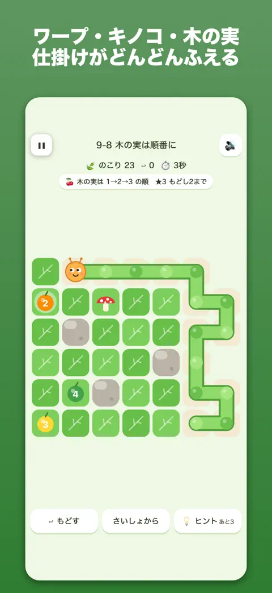
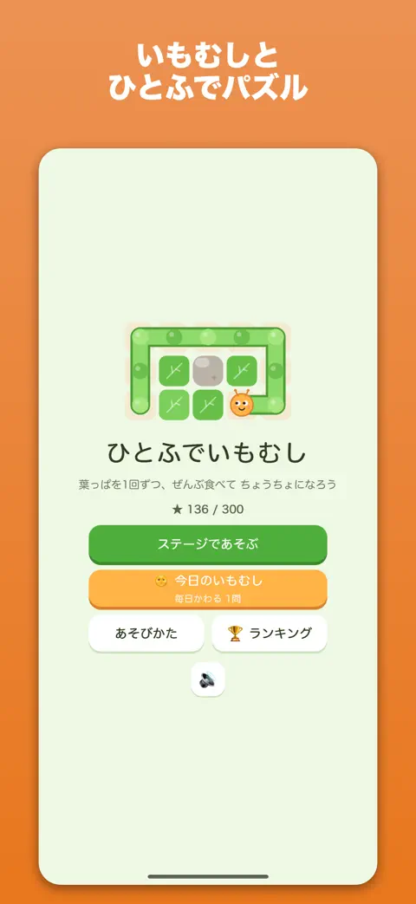

一筆書きパズル（iPhone）
ひとふでいもむし
今日の1問で、
みんなと勝負しよう。
いもむしを指でなぞって、葉っぱを1回ずつぜんぶ食べる一筆書きパズル。毎日かわる「今日のいもむし」は、だれでも同じ盤。早く食べきって、ランキングの上をめざそう。
- 毎日1問・みんな同じ盤
- ランキング
- 全200ステージ・20章
無料・広告あり／iPhone（iOS 18 以降）





← 横にスクロールできます →
「今日のいもむし」で、タイム勝負
- みんな同じ1問毎日かわる問題は、だれでも同じ盤。条件は全員いっしょです。
- 1回目が本番ランキングに入るのは、その日の1回目のクリアだけ。2回目からは練習で何回でも。
- 名前を決めるだけサインインはいりません。ニックネームを決めるだけで参加でき、記録はいつでも消せます。
ランキングは「今日」と「星の合計」の2つ。「ふりかえり」で、なぞった道を1マスずつ見なおせます。はじめて遊んだ日から7日間は、今日のいもむしでもヒントが使えます（ランキングでは電球のしるしがつきます）。
こんな人におすすめ
- すきま時間に1問だけ、さくっと頭をつかいたい人
- かわいいキャラクターのパズルが好きな人
- 毎日の楽しみに、みんなとくらべる遊びがほしい人
遊び方は3ステップ
- なぞるいもむしの頭から、となりの葉っぱへ指でなぞって進みます。
- ぜんぶ食べる同じ葉っぱは1回だけ。ぜんぶ食べたらクリアです。
- ちょうちょに早くクリアするほど星がふえます。食べきると、さなぎからちょうちょになって飛んでいきます。
特徴
- 200ステージ・20章10ステージごとに新しい仕掛け
- 8種類の仕掛け石・一方通行の葉・ワープの穴・しびれキノコ・木の実など
- 9×9までの大きな森どの盤も、食べきる道は1つだけ
- 毎日今日のいもむしいろんな仕掛けがまざった1問
くわしい遊び方
いもむしの頭から、となりの葉っぱへ指でなぞって進みます。同じ葉っぱは1回しか通れません。ぜんぶ食べるとクリアで、いもむしはちょうちょになって飛んでいきます。
- ステージ：全200ステージ・20章。章ごとに、石・一方通行の葉・ワープの穴・しびれキノコ・順番に食べる木の実などの仕掛けが出てきます。★はクリアのタイムで決まります（★3：めやすのタイムまで／★2：その2.5倍まで／★1：クリア。ヒント1回で +30秒。なぞった道をもどしても★はへりません）
- 今日のいもむし：毎日かわる1問です（だれでも同じ盤）。タイム（ヒント1回で +30秒）で点がきまり、ランキングに参加できます（ランキングに入るのは、その日の1回目のクリアだけ。2回目からはれんしゅうです）
- ヒント：次に進むマスが光ります。1日3回まで無料で、そのあとは動画広告を見ると1回使えます（見るかどうかは選べます）
よくある質問
無料ですか？
はい、無料でダウンロードして遊べます（広告あり）。App Store のページからどうぞ。
どの端末で使えますか？
iPhone（iOS 18 以降）で使えます。Android 版はありません。
まちがえた・行きどまりになった
なぞった道をもどれば1つずつもどせます。通ったマスをさわると、そこまでもどります。行き止まりになると案内が出ます。下の「さいしょから」のボタンで、ぜんぶやりなおすこともできます。
途中でやめたい
左上の一時停止ボタンから、つづける・やりなおす・もどる を選べます。
音を消したい
画面右上のスピーカーのボタンで、音のオン・オフを切り替えられます。
次のステージが選べない
第1章〜第11章は、はじめからどの章もステージ1から遊べます。章の中は、クリアすると次のステージが開きます。第12章からは、前の章の10ステージ目をクリアすると開きます。
記録を消したい・引き継ぎたい
記録はこの iPhone の中に保存しています（ランキングに名前をのせた場合は、ニックネームと記録だけを送ります。ランキングの画面の「ランキングから自分の記録を消す」でいつでも消せます）。アプリを削除すると記録も消えます。ほかの端末への引き継ぎにはまだ対応していません。
お問い合わせ
不具合やご要望は、メールでお知らせください。お使いの iPhone の機種と iOS のバージョンを書いていただけると助かります。